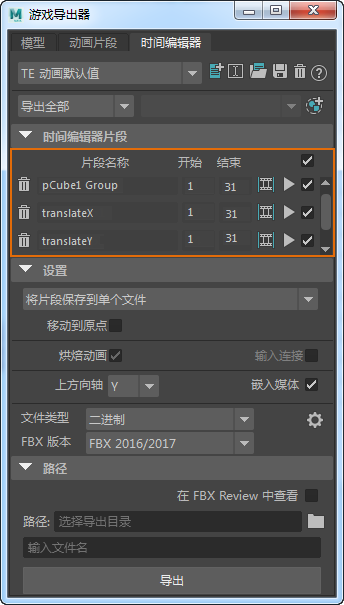

“时间编辑器”(Time Editor)可用于将动画片段及其参数导出到“游戏导出器”(Game Exporter)中。
若要在“游戏导出器”(Game Exporter)中使用动画片段，请执行以下操作：
- 在“时间编辑器”(Time Editor)中选择一个或多个片段。
- 选择“文件 > 游戏导出器”(File > Game Exporter)。
此时将显示“游戏导出器”(Game Exporter)窗口。默认情况下，“TE 动画默认值”(TE Anim Default)选项导出场景中的所有预设。
- 在“时间编辑器片段”(Time Editor Clips)选项卡下，单击 。
- 片段名称、开始帧和结束帧等选定片段特性将添加到“游戏导出器”(Game Exporter)。

注：
- 这些片段是只读的。
- 默认情况下启用“烘焙动画”(Bake Animation)。
- 如果在时间编辑器中未选择任何片段的情况下单击 ，则游戏导出器将显示一条有关选择片段的错误消息。
- 在“路径”(Path)文本框中，输入要导出已添加片段的目录。
- 在“文件名”(Filename)文本框中，输入要导出的文件的名称。
- 单击“导出”(Export)。
若要删除片段，请单击 。